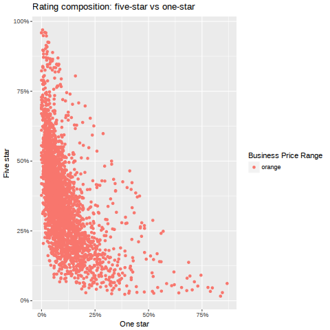
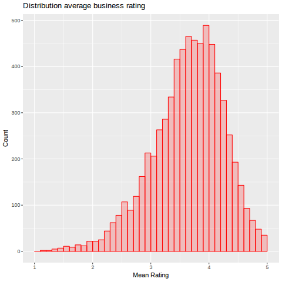
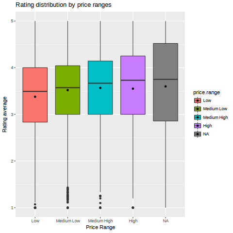
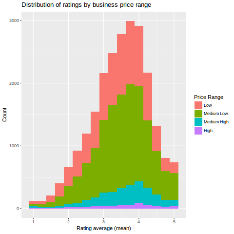
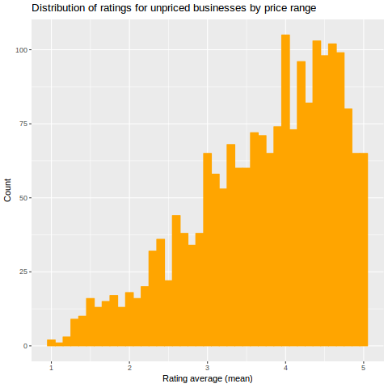
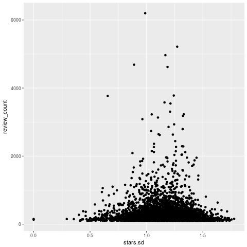

Sensibility of Yelp Rating Trends
Table of Contents
Introduction
The ubiquity of user review services is a modern phenomenon, being perhaps one of the most obvious and profoundly popular uses of the internet. Do you need to know the general opinion about something? Google it. Google an interesting pair of headphones to read its Amazon reviews, google the new Marvel movie to get movie-goer reviews from IMDb, google the neighborhood restaurant to peruse its Yelp reviews. Yelp reviewership is the subject of this blog post, and in particular, a look at how reviewers tend to disbalance their rating standards. This endeavor begins by taking a look at rating consistency by context; the entry point being an investigation into the suspicion that restaurants in less affluent neighborhoods tend to have higher rating variance than those in more affluent neighborhoods.
Methodology
This analysis uses the Yelp academic dataset, which consists of about 2.6 million user reviews, plus some relevant category data (~85k businesses, ~700k users, etc). This data is stored natively in json, though the data is quite flat, even more so one discounts some of the less useful bits of information. Therefore the json was trimmed and converted to a csv format via a python script, and the resulting csv files, uncompressed, total ~2 gigabytes on disk. R is the language of choice for the analysis, with the data.table often coming in handy for its speed.
Initializing data
Data has been preprocessed by a small Python script that flattens the source json into csv and trims off useless data.
Need to load up about 2.3 gigabytes of tabular data and keep track of read
time. Thankfully fread from the the data.table package makes this process an
order of magnitude or two faster than R Base's read.csv:
Time to load CSV data into data.frames: 0.34 minutes
Preprocessing
Zip code info for each business would be quite helpful for looking into the demographical review trends. However, ZIP code info is not explicitly required of businesses when registering with Yelp, so we have to see how easily they can be extracted from from the 'full address' data for each business.
ZIP codes
How many ZIPs did we get? Dang, turns out that only about 1/8 of the addresses contain a retreivable zip code. Upon closer inspection, it turns out that generally businesses do not provide very good address information, and in fact, many do not provide any at all. Luckily, Yelp maintains longitude/latitude coordinates of each business for the purpose of Google maps integration, which we can confidently affirm with the following assertion:
longs <- grep('[[:digit:]]+.[[:digit:]]*', business$longitude) lats <- grep('[[:digit:]]+.[[:digit:]]*', business$latitude) stopifnot(length(longs) == length(lats), length(longs) == length(business$latitude)) print("Done.")
Done.
While geographical coordinates are readily at hand, it turns out that reverse geocoding, the process of converting geographic coordinates to zip codes or the like, costs money and is time consuming to do accurately. Instead, it could be useful to get an idea of the quality of the rating inconsistency by instead using restaurant price range, and not restaurant neighborhood median income (or the like), as a feauture of interest. It may be fun to at some point put in the work/money to produce the zip code information.
Distribution
Inconsistency of ratings
star_variance <- merge(aggregate(stars ~ business_id, data = reviews, FUN = var), na.omit(business[,c('price.range', 'stars.avg', 'business_id', 'review_count')]), by = 'business_id') star_variance <- rename(star_variance, stars.var = stars)
stars.var ~ price.range
We can aggregate the businesses by price range and average out their rating variance to get an idea about how restaurant pricing correlates with reviewer consistency:
aggregate(stars.var ~ price.range, data = star_variance, FUN = mean)
| price.range | stars.var |
|---|---|
| Low | 1.5834411360414 |
| Medium Low | 1.55586274965935 |
| Medium High | 1.67594320395976 |
| High | 1.91272081281026 |
It seems that the correlation between rating inconsistency and restaurant expensiveness is very small. Maybe instead of price range, we can look at rating average:
cor(star_variance$stars.var, star_variance$stars.avg, use='complete')
Correlation between rating variance and rating average: -0.45
So we've gotten a bit far at this point from the original idea of the effect of neighborhood demographics on rating consistency, but this might still be something worth exploring. We can look at the relationship between five-star and one-star vote rates for all businesses:

star_freq<- function(rs) { tabulate(rs)/length(rs) } business <- merge(rename(aggregate(stars ~ business_id, data=reviews, FUN=star_freq), stars.dist=stars), business, by="business_id")
stars.var ~ stars.avg
So, we see that the rating variance for restaurants correlates negatively with their average ratings. That is, poorly rated restaurants have a tendency to also have more varied ratings. A possible conclusion is that restaurant ratings are simply skewed positively, and therefore deviation from mean rating is more often bounded at 5 stars than at 1 star (4 star restaurants will get occaisional 2-star ratings, but of course never a 6-star rating). We can investigate this idea with the following histographic depicting of the mean restaurant rating distribution. Note that we limit ourselves to those businesses with at least 20 reviews:

Above we see that the average restaurant rating shows significant positive
skew, and therefore the first hypothesis seems a bit more be believable. Most
people who have experience with the internet, and therefore have some
familiarity with online rating systems like Yelp, probably have an intuitive
idea about this tendency for these ratings systems to have a very strong
positive skew. I suspect a major reason for this is perceived social pressure,
particularly in the case of a Facebook-driven website such as Yelp (which is
not a unique idea). For reference, the mean business rating is a rather high
3.69 stars.
In any case, we might still wonder why there exists this correlation between rating inconsistency and average rating, yet also no such correlation whatsoever between rating inconsistency and restaurant expensiveness, statements which we might expect, possibly naively, to be quite similar (i.e., more expensive restaurants are generally rated more highly). The reason for this lack of correlation is because this is indeed a naive assumption:

I suspect an explanation for this indescrepency is simply that the value to which these ratings refer is not very well in line with what we, as consumers, intuitively and automatically summarize them to mean. So, while as a consumer we think of these ratings, without much actual precise consideration, as a general measure of "goodness", with zero being un-good and five being very good, as reviewers we (the collective "we") are likely to make all of the considerations required for an accurate evaluation (e.g., average restaurant goodness, pricing, etc). Indeed, it might be more accurate to describe my own system as how little my satisfaction with the restaurant deviated from my expected experience. In this way, I've normalized my perspective on the restaurant, but without actually yielding me any bang-for-the-buck measure. I consider this a bad and unhelpful way to contribute my opinion on the business, but this is the way that I feel I am most naturally inclined.
Price distribution
The pricing makeup of our positively skewed restaurant rating distribution is not particularly surprising:

Interestingly, it seems that unpriced restaurants, i.e. restaurants for which a price range has not yet been assigned via user concensus, are, however, not only considerably more positively rated, but also in a seemingly linear fashion:

We can see clearly that there is a much more siginificant positive skew for these unrated restaurants. This begs the question, is there a downward tendency for restaurant ratings as their profiles mature? The fact that unrated restaurants tend to be less those with less mature profiles is glaringly suspicious.
TODO Sample businesses by first 20 or so reviews (chronologically)
- See if they have a similar distribution to this rating average stuff
REST
s <- star_variance[star_variance$review_count > 20, ] ggplot(s, aes(x=stars.var)) + geom_histogram(color='red', fill='red', binwidth=.1)
s <- star_variance[star_variance$review_count > 100, ]
ggplot(s, aes(x=stars.var, y=review_count)) + geom_point()

Basic stuff
Average rating across all reviews: 3.764
BIN
We can see the law of large numbers in action
s <- sample_n(filter(star_variance, review_count > 30 ), 16000)
ggplot(filter(s, as.numeric(s$price.range) == 1), aes(x=review_count, y=stars.var)) +
geom_point() +
scale_y_continuous(limits = c(0, 4)) +
scale_x_continuous(limits = c(0, 4000))